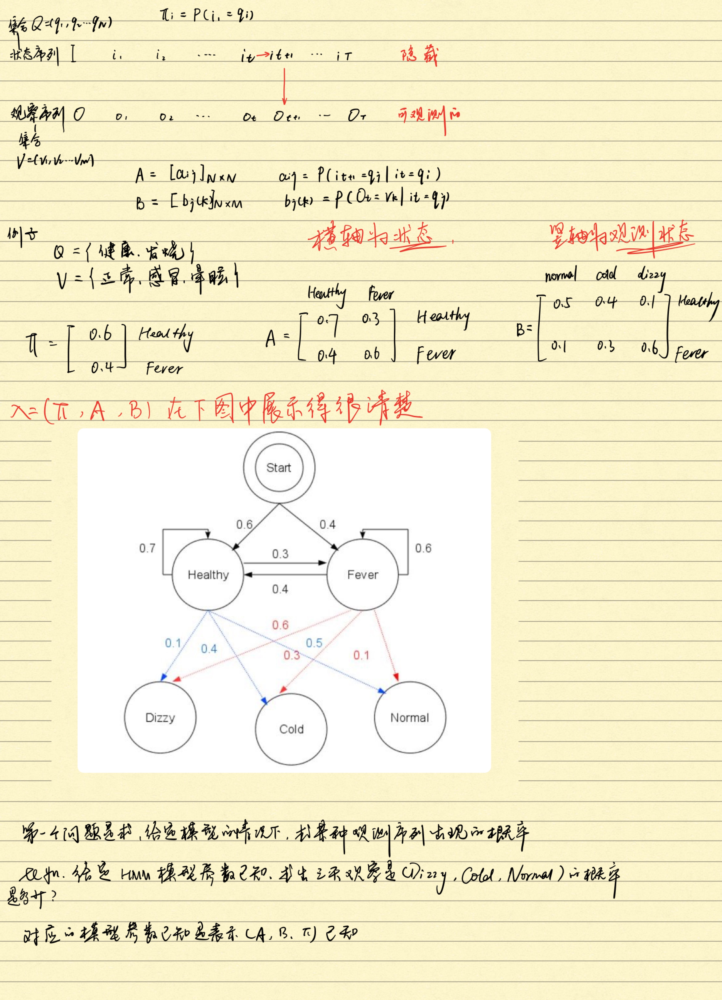
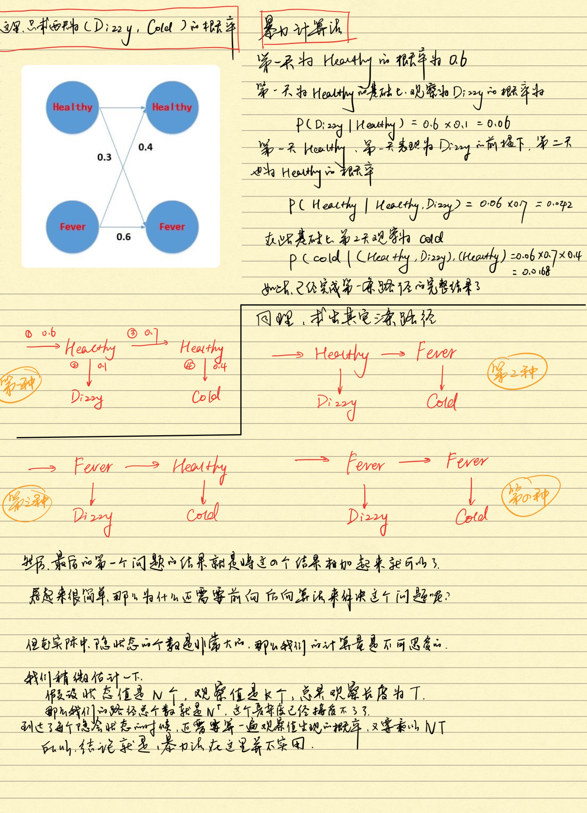

HMM(隐马尔可夫模型的定义):隐马尔可夫模型是关于时序的概率模型,描述由一个隐藏的马尔可夫链随机生成不可观察的状态随机序列,再由各个状态生成一个观测而产生观测随机序列的过程.隐藏的马尔可夫链随机生成的状态的序列,称为状态序列(state sequence);每个状态生成一个观测,而由此产生的观测的随机序列,称为观测序列(observation sequence).序列的每一个位置又可以看作是一个时刻.

隐马尔可夫模型的相关定义
隐马尔可夫模型由初始概率分布,状态转移概率分布以及观测概率分布确定.隐马尔可夫模型的形式定义如下:
设Q是所有可能的状态集合,V是所有可能的观测的集合,其中,N是可能的状态数,M是可能的观测数.
\[\begin{aligned}
Q & = {q_1,q_2,\cdots,q_N} &\text{Q是所有可能的状态集合} \\
V & = {v_1,v_2,\cdots,v_M} & \text{V是所有可能的观测的集合}
\end{aligned}\]
I是长度为T的状态序列,O是对应的观测序列
\[\begin{aligned}
I & = {i_1,i_2,\cdots,i_T} &\text{I是长度为T的状态序列} \\
O & = {o_1,o_2,\cdots,o_T} & \text{O是对应的长度为T的观测序列}
\end{aligned}\]
A是状态转移概率矩阵:
\[A=[a_{ij}]_{N*N} \\\
其中,a_{ij}=P(i_{t+1}=q_j|i_t=q_i),\qquad i=1,2,\cdots,N;j=1,2,\cdots,N \\\
表示在时刻t处于状态q_i的条件下在时刻t+1转移到状态q_j的概率\]
B是观测概率矩阵:
\[B=[b_j(k)]_{N*M} \\\
其中,b_j(k)=P(o_t=v_k|i_t=q_j),\qquad k=1,2,\cdots,M;j=1,2,\cdots,N \\\
表示在时刻t处于状态q_j的条件下生成观测v_k的概率\]
\(\pi\)是初始状态概率向量
\[\pi=(\pi_i) \\\
其中,\pi_i=P(i_1=q_i),\qquad i=1,2,\cdots,N \\\
表示在时刻t=1处于状态q_i的概率\]
隐马尔可夫模型由初始状态概率向量\(\pi\),状态转移概率矩阵A和观测概率矩阵B决定,\(\pi\)和A决定状态序列,B决定观测序列.因此,隐马尔可夫模型\(\lambda\)可以用三元符合表示,即
\[\lambda=(\pi,A,B) \\\
A,B,\pi 称为隐马尔可夫模型的三要素\]
状态转移概率矩阵A与初始状态概率向量\(\pi\)确定了隐藏的马尔可夫链,生成不可观测的状态序列.观测概率矩阵B确定了如何从状态生成观测,与状态序列综合确定了如何产生观测序列.
从定义可知,隐马尔可夫模型作了两个基本假设:
(1)齐次马尔可夫假设,即假设隐藏的马尔可夫链在任意时刻t的状态只依赖于前一时刻的状态,与其他时刻的状态及观测无关,也与时刻t无关.
\[P(i_t|i_{t-1},o_{t-1},\cdots,i_1,o_1)=P(i_t|i_{t-1}),t=1,2,\cdots,T\]
(2)观测独立性假设,即假设任意时刻的观测只依赖于该时刻的马尔可夫链的状态,与其他观测及状态无关.
\[P(o_t|i_T,o_T,i_{T-1},o_{T-1},\cdots,i_{t+1},o_{t+1},i_t,o_t,i_{t-1},o_{t-1},\cdots,i_1,o_1)=P(o_t|i_t)\]
观测序列的生成过程
根据隐马尔可夫模型定义,可以将一个长度为T的观测序列\(O=(o_1,o_2,\cdots,o_T)\)的生成过程描述如下:
输入:隐马尔可夫模型\(\lambda=(A,B,\pi)\),观测序列长度T;
输出:观测序列\(O=(o_1,o_2,\cdots,o_T)\)
(1) 按照初始状态分布\(\pi\)产生状态\(i_1\)
(2) 令t=1
(3) 按照状态\(i_t\)的观测概率分布\(b_{i_t}(k)生成o_t\)
(4) 按照状态\(i_t\)的状态转移概率分布\({a_{i_t j_{t+1}}}产生状态i_{t+1},i_{t+1}=1,2,\cdots,N\)
(5) 令t=t+1;如果t<T,转步(3);否则,终止
前向算法
首先定义前向概率:给定隐马尔可夫模型\(\lambda\),定义到时刻t部分观测序列\(o_1,o_2,\cdots,o_t\)且状态为\(q_i\)的概率为前向概率,记作
\[\alpha_t(i)=P(o_1,o_2,\cdots,o_t,i_t=q_i|\lambda)\]
可以递推地求得前向概率\( \alpha_t(i)\) 及观测序列概率 \(P(O|\lambda)\)
观测序列概率的前向算法:
输入:隐马尔可夫模型\(\lambda\),观测序列O;
输出:观测序列概率\(P(O|\lambda)\)
(1) 初值
\[\alpha_1(i)=\pi_ib_i(o_1),\qquad i=1,2,\cdots,N\]
(2) 递推
\[对t=1,2,\cdots,T-1, \\\
\alpha_{t+1}(i)= \bigg[\sum_{j=1}^N\alpha_t(j)\alpha_{ji} \bigg] b_i(\alpha_{t+1}),\qquad i=1,2,\cdots,N\]
(3) 终止
\[P(O|\lambda)=\sum_{i=1}^N\alpha_T(i)\]
前向算法,步骤(1)初始化前向概率,是初始时刻的状态\(i_1=q_i\)和观测\(o_1\)的联合概率.步骤(2)是前向概率的递推公式,计算到时刻t+1部分观测序列为\(o_1,o_2,\cdots,o_t,o_{t+1}\)且在时刻t+1处于状态\(q_i\)的前向概率,
